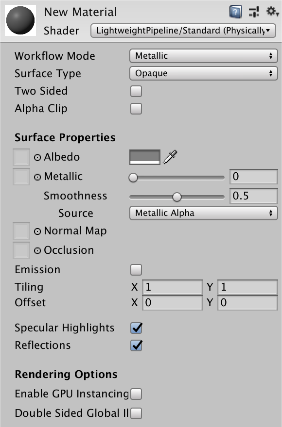

Note: While LWRP is in preview, this documentation might not reflect the end-result 100%, and is therefore subject to change.
Lit shader
The Lit shader lets you render real-world surfaces like stone, wood, glass, plastic, and metals in photo-realistic quality. Your light levels and reflections look lifelike and react properly across various lighting conditions, for example bright sunlight, or a dark cave.
Using the Lit shader in the Editor
You can either create a new Material with the shader or select the shader from the Material Inspector.
To create a new Material with the shader: 1. In your Project window, click Create > Material. Select the Lit shader.
To select the shader in the Material inspector: 1. In your Project, select the Material Inspector. 2. Click Shader, and select Lightweight Render Pipeline > Lit.
UI overview
The Inspector window contains these elements:

Surface Options
The Surface Options control how Unity renders the Material on a screen.
| Property | Description |
|---|---|
| Workflow Mode | In this drop-down menu, choose a workflow that fits your textures, either Metallic and Specular. When you have made your choice, the main Texture options in the rest of the Inspector now follow your chosen workflow. For information on metallic or specular workflows, see this Manual page for the Standard built-in shader in Unity. |
| Surface Type | In this drop-down menu, choose between an Opaque or Transparent surface type. If you select Transparent, a second drop-down menu appears (see Transparent property description below). |
| Transparent surface type | Alpha uses the alpha value to change how visible an object is. 1 is fully opaque, 0 is fully transparent. Premultiply applies a similar effect as Alpha, but only keeps reflections and highlights, even when your surface is transparent. This means that only the reflected light is visible. For example, imagine transparent glass. Additive adds an extra layer on top of another surface. This is good for holograms. Multiply multiplies the colors behind the surface, like colored glass. |
| Two Sided | Enable this to render on both sides of your geometry. When disabled, Unity culls the backface of your geometry and only renders the frontface. For example, Two Sided rendering is good for small, flat objects, like leaves, where you might want both sides visible. By default, this setting is disabled, so that Unity culls backfaces. |
| Alpha Clip | Enable this to make your Material act like a Cutout shader. With this, you can create a transparent effect with hard edges between the opaque and transparent areas. For example, to create straws of grass. Unity achieves this effect by not rendering Alpha values below the specified Clip Threshold, which appears when you enable Alpha Clip. |
Surface Inputs
The Surface Properties describe the surface itself. For example, you can use these properties to make your surface look wet, dry, rough, or smooth.
Note: If you are used to the Standard Shader in the built-in Unity render pipeline, these options are similar to the Main Maps settings in the Material Editor.
| Property | Description |
|---|---|
| Albedo | The albedo specifies the color of the surface. It is also known as the diffuse map. To assign a texture to the Albedo setting, click the object picker next to it. This opens the Asset Browser, where you can select from the textures on your Project. Alternatively, you can use the color picker. The color next to the setting shows the tint on top of your assigned texture. To assign another tint, you can click this color swatch. If you select Transparent or Alpha Clip under Render Properties, your Material uses the texture’s alpha channel or color. |
| Metallic / Specular | Shows a map input for your chosen Workflow Mode in the Render Properties. For a Metallic map, a slider appears, and for a Specular map, a color input appears. For both map types, Smoothness controls the spread of highlights and/or reflections on the surface. Under Source, you can control where to sample a smoothness map from. By default, Source uses the Alpha channel for either map. You can also set it to the Albedo Alpha channel. |
| Normal Map | Assign a tangent-space normal map, similar to the one in the Standard Shader in the built-in render pipeline. To read more about tangent-space normal maps, see this article on Polycount. The float value next to the setting is a multiplier for the effect of the Normal Map. |
| Occlusion | Select an occlusion map to simulate shadowing of ambient light. |
| Emission | Make the surface emit light. When enabled, the Texture map and HDR color settings appear. If you do not enable this, emission will be considered as black, and Unity skips calculating emission. |
| Tiling | A 2D multiplier value that scales the texture to fit across a mesh according to the U and V axes. This is good for surfaces like floors and walls. The default value is 1, which means no scaling. Set a higher value to make the texture repeat across your mesh. Set a lower value to stretch the texture. Try different values until you reach your desired effect. |
| Offset | The 2D offset that positions the texture on the mesh. To adjust the map position on your mesh, move the texture across the U or V axes. |
| Specular Highlights | Enable this to allow your Material to have specular highlights from direct lighting, for example Directional, Point, and Spot lights. This means that your Material reflects the shine from these light sources. Disable this to leave out these highlight calculations, so your shader renders faster. By default, this feature is enabled. |
| Reflections | Sample reflections using the nearest Reflection Probe, or, if you have set one in the Lighting window, the Lighting Probe. Disabling sampling saves on calculations, but also means that your surface has no reflections. |
Advanced
The Rendering Options settings affect behind-the-scenes rendering. They do not have a visible effect on your surface, but on underlying calculations.
| Property | Description |
|---|---|
| GPU Instancing | Make Unity render meshes with the same geometry and Material/shader in one batch, when possible. This makes rendering faster. Meshes cannot be rendered in one batch if they have different Materials or if the hardware does not support GPU instancing. |
| Double Sided Global Illumination | Make the surface act double-sided during lightmapping. When enabled, backfaces bounce light like frontfaces, but Unity still doesn’t render them. |
Channel packing
This shader uses channel packing, so you can use a single RGBA texture for the metallic, smoothness and occlusion properties. When you use texture packing, you only have to load one texture into memory instead of three separate ones. When you write your texture maps in a program like Substance or Photoshop, you can pack the maps like this:
| Channel | Property |
|---|---|
| Red | Metallic |
| Green | Occlusion |
| Blue | None |
| Alpha | Smoothness |